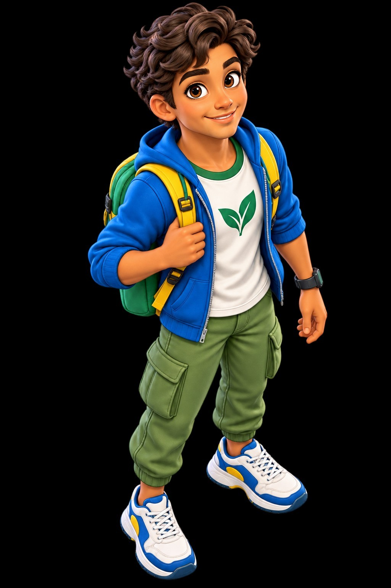
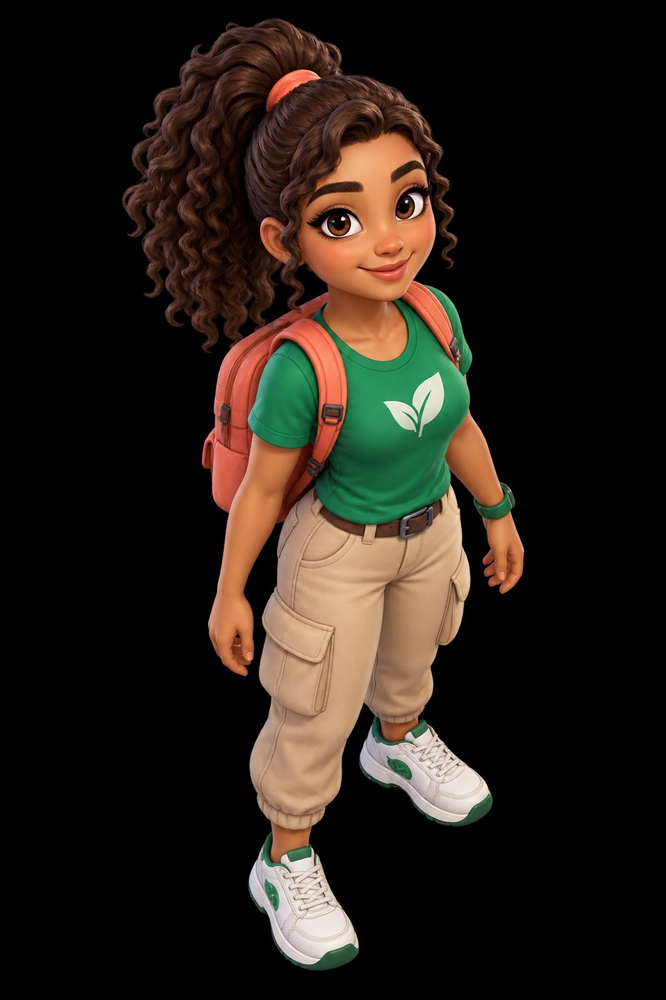

🌿 Master Fértil
O Caminho da Alimentação • escolha seu personagem

THEO

MAYA
ENTRAR NO MUNDO ▶
Theo
❤️❤️❤️
🪙
0
Desafios 0/8 • Cristais 0/5
🌿 Jardim
Setas/WASD ou controle • E/Enter para interagir
E • Interagir
▲
◀
▶
▼
💬
Interagir
🏃
Correr
🔊
Desafio
Continuar